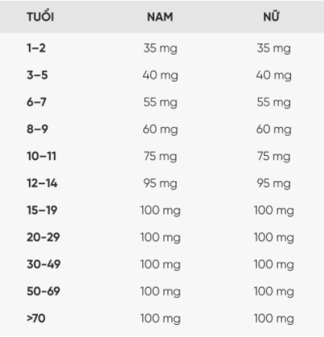

.png)
VITAMIN-C
VITAMIN-C là gì ?
VITAMIN-C hay còn gọi là sinh tố C (acid ascorbic) là một loại vitamin tan trong nước, đóng vai trò thiết yếu trong việc duy trì sức khỏe của các mô liên kết trong cơ thể và hoạt động như một chất chống oxy hóa.
VITAMIN-C là loại tan trong nước, không như một số loại vitamin khác tan trong chất béo, nó không cho phép cơ thể sinh vật tích trữ nó. Do đó, để đáp ứng nhu cầu vitamin C cần thiết, con người cần ăn/uống những thực phẩm có chứa loại vitamin này mỗi ngày.
VITAMIN-C có ở những dạng:
- Thực phẩm.
- Viên nang uống.
- Dạng lỏng.
- Dạng tiêm.
- Viên nén uống.
- Viên nén nhai.
Công dụng của VITAMIN-C
VITAMIN-C đóng vai trò quan trọng trong một số chức năng của cơ thể bao gồm sản xuất collagen, L-Carnitine và một số chất dẫn truyền thần kinh.Nó giúp chuyển hóa protein và có tác dụng kháng oxy hóa mạnh có khả năng làm giảm nguy cơ mắc các bệnh ung thư.
- Vitamin-C giúp tăng cường hệ miễn dịch.
- Vitamin-C giúp phòng chống lão hóa mắt và đục thủy tinh thể.
- Vitamin-C tham gia bảo vệ sức khỏe sản phụ và thai nhi.
- Vitamin-C giúp cải thiện làn da, móng tay và mái tóc.
- Vitamin-C giúp ngăn ngừa loạn nhịp tim sau phẫu thuật tim.
- Vitamin-C giúp hấp thụ sắt tốt hơn.
- Vitamin-C giúp cải thiện chứng rối loạn di truyền ở trẻ sơ sinh - tyrosinemia.
- Vitamin-C giúp ngăn ngừa nhiễm trùng đường hô hấp do tập thể dục cường độ cao.
NHU CẦU
Bạn có thể tăng cường sử dụng trái cây có vị chua hay một số loại rau để cung cấp thêm VITAMIN-C. Ngũ cốc thường không chứa vitamin C cao nhưng các loại ngũ cốc ăn sáng lại có đáp ứng nhu cầu VITAMIN-C của cơ thể.
VITAMIN-C thường được bổ sung dưới dạng acid ascorbic một chất được sản sinh tự nhiên từ nước cam và bông cải xanh. Do đó, bạn có thể bổ sung thực phẩm chứa acid này để cơ thể tăng khả năng hấp thụ VITAMIN-C cao hơn. Ngoài ra, bạn có thể tìm thấy một số chất dinh dưỡng ở dạng khác để bổ sung VITAMIN-C như: natri ascorbat , canxi ascorbate , bioflavonoid.
Bảng nhu cầu Vitamin C khuyến nghị 
CÁC VẤN ĐỀ THƯỜNG GẶP
VITAMIN-C
có thể gây ra bệnh gì?
- Vết thương chậm lành.
- Bệnh loãng xương.
- Bệnh thiếu máu.
- Bệnh thoái hóa khớp.
- Bệnh tim.
- Bệnh Scorbut.
- Ung thư.
- Rối loạn tiêu hóa, loét dạ dày, tá tràng.
- Đau đầu, mất ngủ.
- Viêm bàng quang.
- Tiêu chảy.
- Tăng tạo sỏi thận.
- Bệnh gút.
- Giảm độ bền hồng cầu.
- Cản trở hấp thụ vitamin A, B12 và có thể gây ra hiện tượng ức chế ngược nếu ngừng đột ngột.
- Phụ nữ mang thai dùng vitamin C ở liều cao trong thời gian dài có thể gây ra những nhu cầu bất thường ở thai nhi, từ đó dẫn đến bệnh scorbut sớm ở trẻ..
NHỮNG VẤN ĐỀ CẦN LƯU Ý
1. Bệnh SCORBUT
- Thiếu vitamin C -> gây bệnh SCORBUT.
- Nó có thể gây ra thiếu máu, suy nhược cơ thể, mệt mỏi, chảy máu tự phát, đau ở các chi đặc biệt đau ở chân, sưng phù một số bộ phận của cơ thể, đôi khi gây viêm loét lợi và rụng răng.
- Mặc dù bệnh không phổ biến trong xã hội hiện đại nhưng chúng vẫn tồn tại. Bất cứ ai không nạp đủ vitamin C trong chế độ ăn uống hàng ngày đều có nguy cơ mắc bệnh.
Bảo đảm ăn uống đủ nhu cầu các chất dinh dưỡng và vitamin C. Hàm lượng vitamin C trong các loại rau quả phân bố không đồng đều, có nhiều ở lớp vỏ hơn ở ruột, ở lá nhiều hơn ở cuống và thân rau.
Chế độ ăn bổ sung cần có thức ăn giàu vitamin C như:
- Có nhiều trong rau quả tươi như phần cùi trắng của cam, quýt, chanh, đặc biệt có nhiều trong rau xanh như rau bông cải xanh, tiêu, khoai tây, cà chua,...
- Hầu hết các loại rau quả tươi đều chứa vitamin C. Thông thường, các loại rau quả có hàm lượng vitamin C cao hơn khi được trong ở nơi có đầy đủ ánh sáng.

Uống vitamin A có tác dụng gì cho trẻ?
Bài viết được tư vấn chuyên môn bởi Bác sĩ chuyên khoa II Hồ Viết Lệ Diễm...

Tác hại khi thừa hoặc thiếu Vitamin A
Bài viết được tư vấn chuyên môn bởi Bác sĩ chuyên khoa II Hồ Viết Lệ Diễm...

Vì sao sau uống vitamin A, thóp trẻ có thể bị phồng?
Thóp phồng sau khi trẻ uống vitamin A là một tác dụng phụ nhẹ, triệu chứng...

Vitamin A trong chế độ ăn của trẻ
Trên toàn thế giới, trẻ em thiếu vitamin A lâm sàng có nhiều khả năng...

Dấu hiệu thiếu Vitamin A và cách điều trị
Bài viết bởi Bác sĩ Ma Văn Thấm và Bác sĩ Nguyễn Nam Phong, Khoa Nhi...